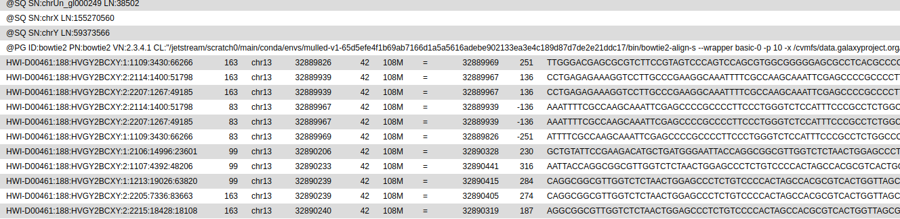
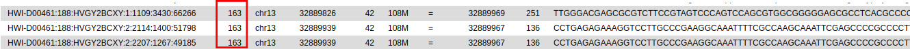

title: "" author: "Mark Dunning" output: htmlnotebook: toc: yes tocfloat: yes htmldocument: dfprint: paged toc: yes editor_options:

web : sbc.shef.ac.uk
twitter: @SheffBioinfCore
email: bioinformatics-core@sheffield.ac.uk
This tutorial will cover the basics of NGS analysis using Galaxy; a open-source web-based platform for the analysis of biological data. You should gain an appreciation of the tasks involved in a typical NGS analysis and be comfortable with the outputs generated by a sequencing service.
Parts of this tutorial are based on the NGS tutorial from the Galaxy Project
The data for this tutorial are publicaly-available exome sequencing data downsampled to the BRCA2 region from a fictitious patient. We will use these data throughout the course to call variants, filter and discuss the clinical impact of any mutations. This is paired-end data, so we get two fastq files.
Make sure you check your email to activate your account
We can going to import the fastq files for this experiment. This is a standard format for storing raw sequencing reads and their associated quality scores. However, as we will see, the representation of the quality scores has changed over time.
You can import the data by:
Upload the sequence data by selecting the files JoeBlogsBRCAPanel_R1.fastq and JoeBlogsBRCAPanel_R2.fastq. Make sure the type is specified as 'fastqsanger'
when uploading.
You should now have these 2 files in your history:
JoeBlogsBRCAPanel_R1.fastqJoeBlogsBRCAPanel_R2.fastqYou can view the files you just uploaded by clicking the eye icon the history item. The first few lines should read as follows
JoeBlogsBRCAPanel_R1.fastq
@HWI-D00461:188:HVGY2BCXY:1:1101:1363:84148/1
TGTGTCATTTCTATTATCTTTGGAACAACCATGAATTAGTCCCTTGGGGTTTTCAAATGCTGCACACTGACTCACACATTTATTTGGTTCTGTTTTTGCCTTCCCTNN
+
DDDDDIHIIIIIHIIIIIIIIIIHIIIIIIIIIHIIIIIIHHIIIIIIIHIIIHIIIIIIIIIIIIIIIIIIIIIIIIIIIIIIIIIIIIIIIIIIIIHHIDHHIHC#
JoeBlogsBRCAPanel_R2.fastq
@HWI-D00461:188:HVGY2BCXY:1:1101:1363:84148/2
TGGAAAGACTTTTGGGGGGGGGAGTATTTTTCTTGTTTCTGGTTTTGGTTTTTTTGATCCGGGAAAGATTTTGTTTTTTGGAGGTTGGACTTTTGGGGAGGGGAAAAN
+
<00<<1111<1<11/0/<///</<0111DF11<<11111<11111<1/1<1D1///<<11<<</<1111<<11<DD1<//<110<11/11<0<0</0<0<<-//<<FE
Each read is described by 4 lines in the file:-

The quality scores are ASCII representations of how confident we are that a particular base has been called correctly. Letters that are further along the alphabet indicate higher confidence. This is important when trying to identify types of genome variation such as single base changes, but is also indicative of the overall quality of the sequencing. Different scales have been employed over time (resulting in a different set of characters appearing in the file). We will need to tell Galaxy which scale has been used in order that we can process the data correctly; hence why we explictly stated the files were of type fastqsanger when we uploaded them.
First of all, we convert the base-calling probability (p) into a Q score using the formula

$$ p = 10^{-Q/10} $$
Let's see this calculation for the first few bases of the first read in JoeBlogsBRCAPanel_R1.fastq; DDDDDIHI....
Character | Code | Minus 33 Offset | Probability ------------- | ------------- | ------------- | ------------- D | 68 | 35 | 0.0003162278 D | 68 | 35 | 0.0003162278 D | 68 | 35 | 0.0003162278 D | 68 | 35 | 0.0003162278 D | 68 | 35 | 0.0003162278 I | 73 | 40 | 0.0001000000 H | 72 | 39 | 0.0001258925 I | 73 | 40 | 0.0001000000
In practice, we don't have to convert the values as we have software that will do this automatically
Exercise:
JoeBlogsBRCAPanel_R1.fastq
FastQC is a popular tool from Babraham Institute Bioinformatics Group used for quality assessment of sequencing data. Most Bioinformatics pipelines will use FastQC, or similar tools in the first stage of the analysis. The documentation for FastQC will help you to interpret the plots and stats produced by the tool. A traffic light system is used to alert the user's attention to possible issues. However, it is worth bearing in mind that the tool is blind to the particular type of sequencing you are performing (i.e. whole-genome, ChIP-seq, RNA-seq), so some warnings might be expected due to the nature of your experiment.
Look at the generated FastQC metrics. This data looks pretty good - high per-base quality scores (most above 30).

We don't really spend much time look at fastq files, as most of our time is spent with aligned reads. i.e. we have used some software to tell us whereabouts in the genome each read belongs to. This will usually be performed for you as part of a sequencing service, but it is good to get an appreciation of the steps involved.
In this section we map the reads in our FASTQ files to a reference genome.
bowtie in the search boxThe result will be a .bam file that we will describe in the next section. This file is not human-readable, as it is compresed. But we can convert to a readable format for illustration purposes.

bam file formatUnlike most of Bioinfomatics, a single standard file format has emerged for aligned reads. Moreoever, this file format is consistent regardless of whether you have DNA-seq, RNA-seq, ChIP-seq... data.
The bam file is a compressed, binary, version of a sam file.
.sam filebwa.bam file. See later.@ character, followed by tab-delimited lines
The first part of the header lists the names (SN) of the sequences (chromosomes) used in alignment, their length (LN) and a md5sum "digital fingerprint" of the .fasta file used for alignment (M5).
``` @HD VN:1.5 SO:coordinate GO:none @SQ SN:1 LN:249250621 M5:1b22b98cdeb4a9304cb5d48026a85128 @SQ SN:2 LN:243199373 M5:a0d9851da00400dec1098a9255ac712e @SQ SN:3 LN:198022430 M5:fdfd811849cc2fadebc929bb925902e5 @SQ SN:4 LN:191154276 M5:23dccd106897542ad87d2765d28a19a1 ..... .....
```
Next we can define the read groups present in the file which we can use to identify which sequencing library, sequencing centre, Lane, sample name etc.
``` @RG ID:SRR077850 CN:bi LB:Solexa-42057 PL:illumina PU:ILLUMINA SM:NA06984 @RG ID:SRR081675 CN:bi LB:Solexa-42316 PL:illumina PU:ILLUMINA SM:NA06984 @RG ID:SRR080818 CN:bi LB:Solexa-44770 PL:illumina PU:ILLUMINA SM:NA06984 @RG ID:SRR084838 CN:bi LB:Solexa-42316 PL:illumina PU:ILLUMINA SM:NA06984 @RG ID:SRR081730 CN:bi LB:Solexa-42316 PL:illumina PU:ILLUMINA SM:NA06984 ..... .....
```
Finally, we have a section where we can record the processing steps used to derive the file ``` @PG ID:MosaikAligner CL:/share/home/wardag/programs/MOSAIK/bin/MosaikAligner -in /scratch/wardag/NA06984.SRR077850.mapped.illumina.mosaik.CEU.SINGLE.20111114/NA06984.SRR077850.mapped.illumina.mosaik.CEU.SINGLE.20111114.mkb -out .... ....
```
Next is a tab-delimited section that describes the alignment of each sequence in detail.
``` SRR081708.237649 163 1 10003 6 1S67M = 10041 105 GACCCTGACCCTAACCCTGACCCTGACCCTAACCCTGACCCTGACCCTAACCCTGACCCTAACCCTAA S=<====<<>=>==@??;?>@@@=??@@????@??@?>?@@<@>@'@=?=??=<=>?>?=Q ZA:Z:<&;0;0;;308;68M;68><@;0;0;;27;;>MD:Z:5A11A5A11A5A11A13 RG:Z:SRR081708 NM:i:6 OQ:Z:GEGFFFEGGGDGDGGGDGA?DCDD:GGGDGDCFGFDDFFFCCCBEBFDABDD-D:EEEE=D=DDDDC:
```
Column | Official Name | Brief ------ | -------------- | ----------- 1 | QNAME | Sequence ID 2 | FLAG | Sequence quality expressed as a bitwise flag 3 | RNAME | Chromosome 4 | POS | Start Position 5 | MAPQ | Mapping Quality 6 | CIGAR | Describes positions of matches, insertions, deletions w.r.t reference 7 | RNEXT | Ref. name of mate / next read 8 | PNEXT | Postion of mate / next read 9 | TLEN | Observed Template length 10 | SEQ | Sequence 11 | QUAL | Base Qualities
There can also be all manner of optional tags as extra columns introduce by an aligner or downstream analysis tool. A common use is the RG tag which refers back to the read groups in the header.
The "flags" in the sam file can represent useful QC information
The combination of any of these properties is used to derive a numeric value
For instance, a particular read has a flag of 163

There is a set of properties that a read can possess. If a particular property is observed, a corresponding power of 2 is added multiplied by 1. The final value is derived by summing all the powers of 2.
``` ReadHasProperty Binary MultiplyBy isPaired TRUE 1 1 isProperPair TRUE 1 2 isUnmappedQuery FALSE 0 4 hasUnmappedMate FALSE 0 8 isMinusStrand FALSE 0 16 isMateMinusStrand TRUE 1 32 isFirstMateRead FALSE 0 64 isSecondMateRead TRUE 1 128 isSecondaryAlignment FALSE 0 256 isNotPassingQualityControls FALSE 0 512 isDuplicate FALSE 0 1024
Value of flag is given by
1x1 + 1x2 + 0x4 + 0x8 + 0x16 + 1x32 + 0x64 + 1x128 + 0x256 + 0x512 + 0x1024 = 163
```
See also

The CIGAR (Compact Idiosyncratic Gapped Alignment Report) string is a way of encoding the match between a given sequence and the position it has been assigned in the genome. It is comprised by a series of letters and numbers to indicate how many consecutive bases have that mapping.
Code | Description ------------- | ------------- M | alignment match I | insertion D | deletion N | skipped S | soft-clipping H | hard-clipping
e.g.
68M
1S67M
15M87N70M90N16M